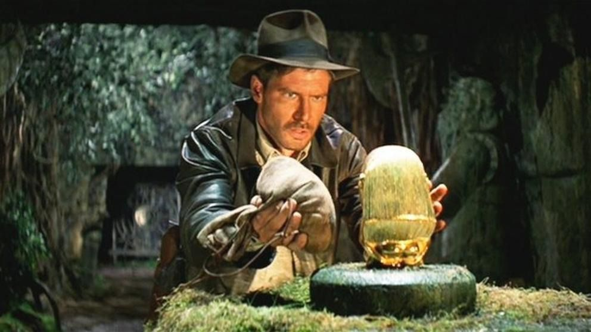
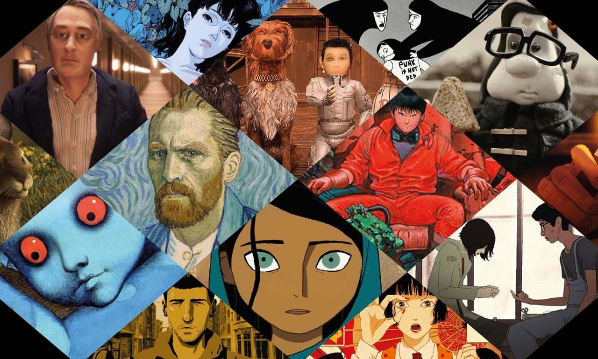

| ACCION |
- Duro de Matar (Die Hard) (1988)
- Terminator 2: Judgment Day (1991)
- Mad Max: Fury Road (2015)
- Matrix (1999)
- Misión: Imposible - Protocolo Fantasma (Mission: Impossible - Ghost Protocol)** (2011)
- John Wick (2014)
- Rápido y Furioso 5in Control (Fast Five)** (2011)
- Inception (2010)
|

|
| AMOR |
- Casablanca (1942)
- Lo que el viento se llevó (Gone with the Wind) (1939)
- Titanic (1997)
- Orgullo y Prejuicio (Pride and Prejudice) (2005)
- Antes del Amanecer (Before Sunrise) (1995)
- Eterno Resplandor de una Mente sin Recuerdos (Eternal Sunshine of the Spotless Mind) (2004)
- La Bella y la Bestia (Beauty and the Beast) (1991)
- Diario de una Pasión (The Notebook) (2004)
- Annie Hall (1977)
- Bajo el Sol de la Toscana (Under the Tuscan Sun) (2003)
|
|
| TERROR |
- El Exorcista (1973)
- Dirigida por William Friedkin.
- El Resplandor (The Shining) (1980)
- Dirigida por Stanley Kubrick.
- Psicosis (Psycho) (1960)
- Dirigida por Alfred Hitchcock.
- La Noche de los Muertos Vivientes (Night of the Living Dead) (1968)
- Dirigida por George A. Romero.
- Halloween (1978)
- Dirigida por John Carpenter.
- El Silencio de los Corderos (The Silence of the Lambs) (1991)
- Dirigida por Jonathan Demme.
- El Aro (The Ring) (2002)
- Dirigida por Gore Verbinski.
- El Conjuro (The Conjuring) (2013)
- Dirigida por James Wan.
- El Sexto Sentido (The Sixth Sense) (1999)
- Dirigida por M. Night Shyamalan
|
|
| AVENTURA |
- Indiana Jones: En busca del arca perdida (1981)
- El Señor de los Anillos: La Comunidad del Anillo (2001)
- Piratas del Caribe: La maldición de la Perla Negra (2003)
ç
- Parque Jurásico (1993)
- Star Wars: Episodio IV - Una nueva esperanza (1977)
- Los Goonies (1985)
- Las aventuras de Tintín: El secreto del Unicornio (2011)
- Los cazadores del arca perdida (1981)
- La vida secreta de Walter Mitty (2013)
- Mad Max: Furia en la carretera (2015)
|

|
| ANIMACION |
- El Rey León (1994)
- Toy Story (1995)
- El Viaje de Chihiro (2001)
- Up (2009)
- Wall-E (2008)
- Buscando a Nemo (2003)
- Coco (2017)
- Spider-Man: Un Nuevo Universo (2018)
- Shrek (2001)
- La Bella y la Bestia (1991)
|

|
| CIENCIA FICCION |
- Blade Runner (1982)
- Dirigida por Ridley Scott
- 2001: Una Odisea del Espacio (1968)
- Dirigida por Stanley Kubrick y escrita en colaboración con Arthur C.
- Alien (1979)
- Otra obra de Ridley Scott
- Terminator 2: El Juicio Final (1991)
- irigida por James Cameron
- Origen (2010)
- Dirigida por Christopher Nolan
|

|